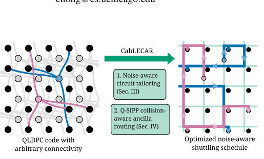
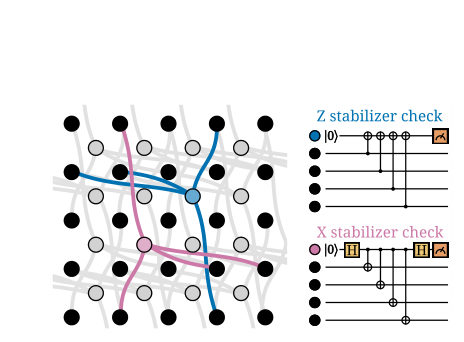
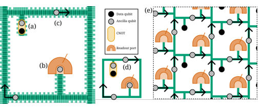
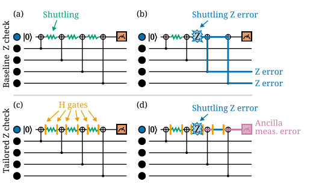
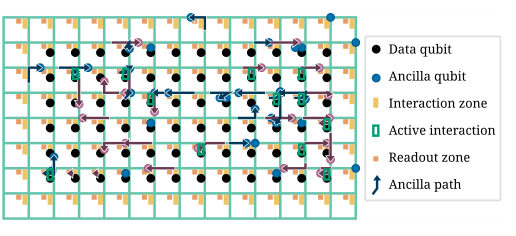
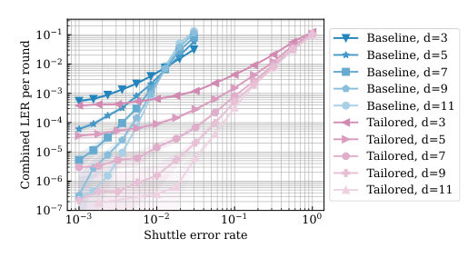
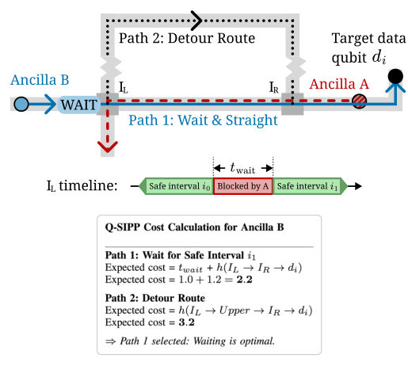
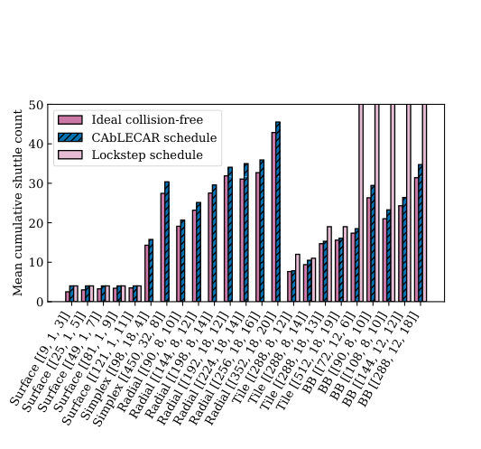
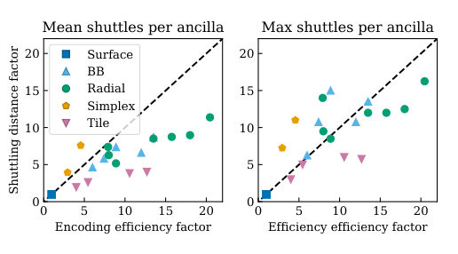

228 papers · 49 relevant · 5 highlighted
Every paper with at least one nonzero topic score, sorted by best-matching score. 🔥 marks scores ≥4/5. Click the title to jump to the full entry below; click [arXiv] to open the paper page. (secondary) marks papers from de-prioritized cond-mat archives.
analog quantum simulation 5/5 · 🔥 exotic spin models in light-matter 4/5 · 🔥 non-equilibrium dynamics 4/5 · entanglement & information structure 3/5 · QC/QI experiment 2/5 · non-equilibrium universality 2/5 · quantum measurements 2/5free-space correlated emission 5/5 · 🔥 Dicke superradiance 4/5 · 🔥 correlated / nonlocal dissipation 4/5 · methods for driven-dissipative 2/5 · non-equilibrium universality 2/5quantum optics experiment 5/5 · 🔥 QC/QI experiment 4/5 · interference shaping light 3/5 · entanglement & information structure 2/5 · quantum measurements 2/5spintronics-quantum-optics interface 5/5 · 🔥 entanglement & information structure 4/5 · Tavis-Cummings & cavity-many-emitter 2/5 · correlated / nonlocal dissipation 2/5QC/QI experiment 5/5 · 🔥 entanglement & information structure 4/5 · quantum measurements 2/5scars & prethermalization 5/5 · entanglement & information structure 3/5 · non-equilibrium dynamics 3/5measurement-induced transitions 4/5 · 🔥 quantum measurements 4/5 · driven-dissipative phase transition 3/5 · non-equilibrium universality 3/5 · Keldysh / 2PI / non-Gaussian methods 2/5 · entanglement & information structure 2/5 · methods for driven-dissipative 2/5 · non-equilibrium dynamics 2/5correlated cavity matter 4/5 · 🔥 entanglement & information structure 4/5 · Keldysh / 2PI / non-Gaussian methods 3/5 · spintronics-quantum-optics interface 3/5 · Tavis-Cummings & cavity-many-emitter 2/5 · analog quantum simulation 2/5 · correlated / nonlocal dissipation 2/5 · exotic spin models in light-matter 2/5non-equilibrium dynamics 4/5 · Kondo & dissipative impurity 3/5 · analog quantum simulation 3/5 · entanglement & information structure 3/5 · Keldysh / 2PI / non-Gaussian methods 2/5 · non-equilibrium universality 2/5non-equilibrium universality 4/5 · Tavis-Cummings & cavity-many-emitter 3/5 · non-equilibrium dynamics 3/5 · analog quantum simulation 2/5 · correlated cavity matter 2/5 · entanglement & information structure 2/5entanglement & information structure 4/5 · 🔥 non-equilibrium dynamics 4/5 · non-equilibrium universality 3/5 · scars & prethermalization 3/5methods for driven-dissipative 4/5 · driven-dissipative phase transition 3/5 · non-equilibrium dynamics 3/5 · correlated / nonlocal dissipation 2/5 · entanglement & information structure 2/5(secondary) — 🔥 quantum optics experiment 4/5 · correlated cavity matter 3/5 · QC/QI experiment 2/5 · Tavis-Cummings & cavity-many-emitter 2/5 · analog quantum simulation 2/5non-equilibrium dynamics 4/5 · methods for driven-dissipative 3/5 · Keldysh / 2PI / non-Gaussian methods 2/5 · driven-dissipative phase transition 2/5 · non-equilibrium universality 2/5correlated / nonlocal dissipation 4/5 · quantum measurements 3/5 · Tavis-Cummings & cavity-many-emitter 2/5 · entanglement & information structure 2/5 · methods for driven-dissipative 2/5Kondo & dissipative impurity 4/5 · 🔥 methods for driven-dissipative 4/5 · non-equilibrium dynamics 3/5 · Keldysh / 2PI / non-Gaussian methods 2/5non-equilibrium dynamics 4/5 · analog quantum simulation 3/5 · methods for driven-dissipative 3/5 · driven-dissipative phase transition 2/5QC/QI experiment 4/5 · 🔥 quantum optics experiment 4/5 · interference shaping light 2/5 · spintronics-quantum-optics interface 2/5quantum measurements 4/5 · correlated / nonlocal dissipation 2/5 · entanglement & information structure 2/5 · methods for driven-dissipative 2/5 · non-equilibrium dynamics 2/5correlated / nonlocal dissipation 4/5 · methods for driven-dissipative 3/5 · entanglement & information structure 2/5 · non-equilibrium dynamics 2/5non-equilibrium dynamics 4/5 · methods for driven-dissipative 3/5 · driven-dissipative phase transition 2/5 · entanglement & information structure 2/5entanglement & information structure 4/5 · 🔥 non-equilibrium dynamics 4/5 · driven-dissipative phase transition 2/5analog quantum simulation 4/5 · 🔥 non-equilibrium dynamics 4/5 · exotic spin models in light-matter 2/5(secondary) — 🔥 QC/QI experiment 4/5 · 🔥 quantum optics experiment 4/5 · interference shaping light 2/5non-equilibrium dynamics 4/5 · non-equilibrium universality 3/5 · Keldysh / 2PI / non-Gaussian methods 2/5correlated / nonlocal dissipation 4/5 · non-equilibrium dynamics 3/5 · methods for driven-dissipative 2/5entanglement & information structure 4/5 · non-equilibrium dynamics 3/5 · spintronics-quantum-optics interface 2/5quantum measurements 4/5 · methods for driven-dissipative 3/5 · non-equilibrium dynamics 2/5quantum optics experiment 4/5 · QC/QI experiment 3/5 · quantum measurements 2/5QC/QI experiment 4/5 · 🔥 quantum optics experiment 4/5entanglement & information structure 4/5 · methods for driven-dissipative 2/5 · quantum measurements 2/5quantum measurements 4/5 · entanglement & information structure 2/5 · non-equilibrium dynamics 1/5entanglement & information structure 4/5 · non-equilibrium dynamics 2/5QC/QI experiment 4/5 · spintronics-quantum-optics interface 2/5QC/QI experiment 4/5 · methods for driven-dissipative 2/5interference shaping light 4/5 · quantum measurements 2/5entanglement & information structure 4/5 · quantum measurements 2/5quantum measurements 4/5 · methods for driven-dissipative 2/5scars & prethermalization 4/5 · non-equilibrium dynamics 2/5interference shaping light 4/5 · non-equilibrium dynamics 2/5analog quantum simulation 4/5 · non-equilibrium dynamics 2/5QC/QI experiment 4/5 · quantum measurements 1/5QC/QI experiment 4/5 · quantum measurements 1/5methods for driven-dissipative 4/5QC/QI experiment 4/5QC/QI experiment 4/5QC/QI experiment 4/5QC/QI experiment 4/5entanglement & information structure 4/5Papers by authors on your watch list. Click the title to jump to the full entry below; click [arXiv] to open the paper page.
Papers from quant-ph and your primary cond-mat archives (quant-gas, stat-mech, str-el, dis-nn). Highlighted papers (⭐) come first, then everything else sorted by topic-relevance score, highest first.
← Index · ← Previous · Next →
Authors: Kieran McDowall, Konstantinos Georgopoulos, Petros Wallden
Type: theory · Category: quantum information and computing · PDF: https://arxiv.org/pdf/2604.24580v1
Analysis basis: full PDF text, analyzed in chunks
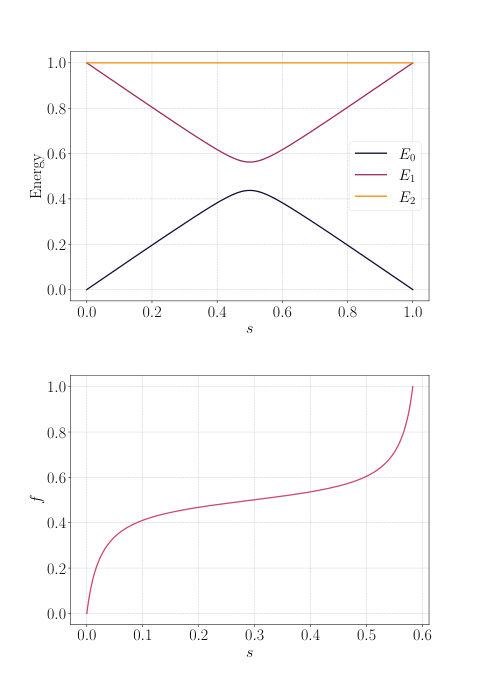
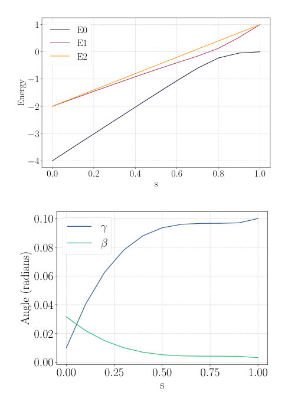
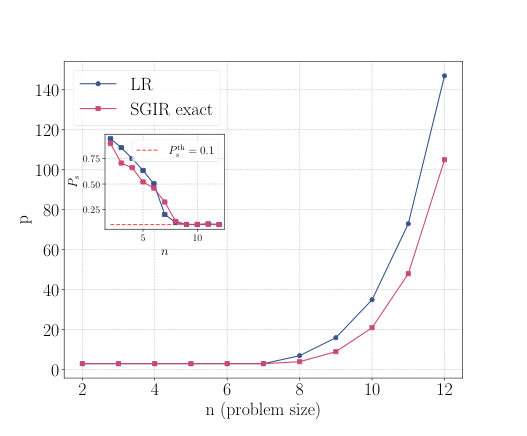
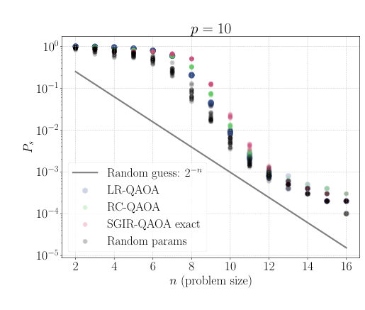
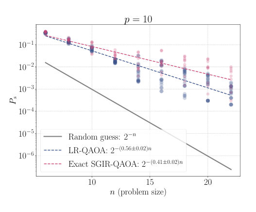
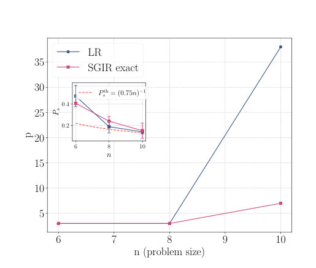
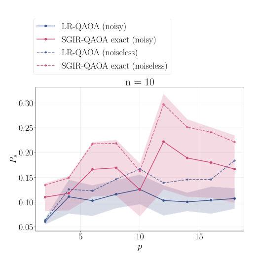
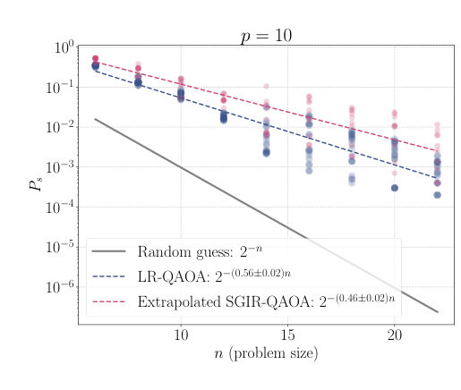
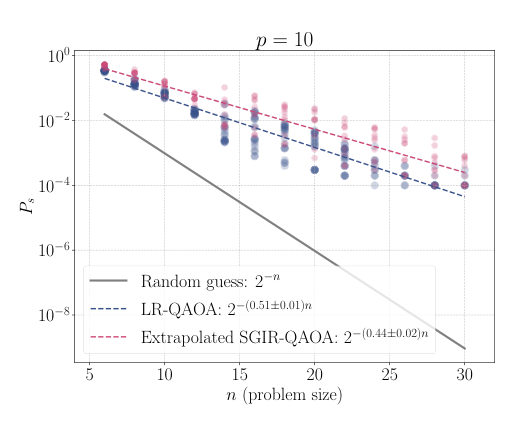
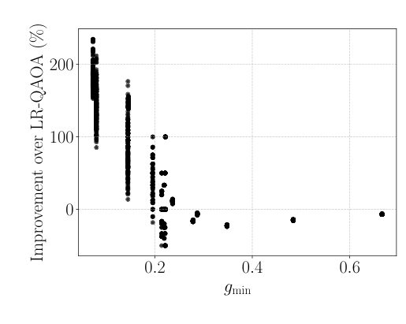
Main problem. Finding optimal variational parameters for the Quantum Approximate Optimization Algorithm (QAOA) is computationally difficult, and existing 'de-variationalized' schedules like the Linear Ramp (LR-QAOA) fail to account for the closing of the spectral gap.
Main result. The proposed Spectral Gap Informed Ramp (SGIR-QAOA) outperforms LR-QAOA on Grover's problem and the Maximum Independent Set (MIS) problem, requiring shallower depths to reach target success probabilities and demonstrating better exponential scaling.
Method. The authors develop a parameter schedule that uses smooth ramps informed by the spectral gap of an adiabatic Hamiltonian, performing slower evolution where the gap is small, and use extrapolation techniques to scale the method to larger problem sizes.
Summary. This paper introduces a new parameter scheduling strategy for the QAOA algorithm called SGIR-QAOA. By using information about the spectral gap of an adiabatic Hamiltonian, the algorithm slows down its evolution during periods where the gap is small, effectively mitigating diabatic transitions. The authors demonstrate that this approach provides superior performance and better scaling for both Grover's search and the Maximum Independent Set problem compared to standard linear ramp methods. Furthermore, the method proves to be scalable through gap extrapolation and remains effective even in the presence of depolarizing noise.
Model / system. The study utilizes the QAOA framework with alternating mixer and cost Hamiltonians, specifically testing on Grover's search problem, Erdős–Rényi random graphs, and 3-regular sparse graphs for the Maximum Independent Set problem.
Key observables. Optimal solution probability (Ps), required QAOA depth (p), and the minimum spectral gap (gmin).
Important parameters / regimes. QAOA depth (p), problem size (n), spectral gap (g), and depolarizing noise strength.
Assumptions / limitations. The method assumes that the spectral gap information from smaller system sizes can be accurately extrapolated to larger system sizes where exact calculation is impossible.
Figures summary. Figures show the eigenvalue spectrum of Grover's problem, comparisons of success probability (Ps) across different schedules, plots of required depth (p) vs. problem size (n), and the correlation between performance improvement and the minimum spectral gap.
Paper structure. The paper introduces the problem of parameter optimization in QAOA, presents the SGIR-QAOA method, validates it using Grover's problem, extends the analysis to combinatorial optimization (MIS) on various graph types, demonstrates scalability via extrapolation, and tests robustness against depolarizing noise.
A challenge with the Quantum Approximate Optimisation Algorithm (QAOA), and variational algorithms in general, is finding good variational parameters, a task which in itself can be NP-hard. Recent work has sought to de-variationalise QAOA by picking well-informed guesses for the variational parameters. The Linear Ramp QAOA (LR-QAOA) achieves this by using parameter schedules inspired by the quantum adiabatic algorithm. We go a step further and use spectral gap information from an adiabatic Hamiltonian, with the QAOA mixer Hamiltonian as our initial Hamiltonian, to make smooth ramps which we call Spectral Gap Informed Ramps (SGIR-QAOA). SGIR-QAOA schedules perform slow evolution where the spectral gap of the adiabatic Hamiltonian is small. We show that SGIR-QAOA has performance improvements over LR-QAOA on Grover's problem at constant depth and that SGIR-QAOA requires shorter depths to achieve the same optimal solution probability. We then show that these performance benefits extend to a problem with potential practical applications -- the Maximum Independent Set (MIS) problem. Finally, we demonstrate the scalability of the SGIR-QAOA method using extrapolated spectral gap information for scales that the spectral gap cannot be exactly evaluated, and show that the advantage appears to persist under mild depolarising noise.
Authors: Karina Zakharova, Artem Chernikov, Sergey Sysoev
Type: theory · Category: quantum information and computing · PDF: https://arxiv.org/pdf/2604.24742v1
Analysis basis: full PDF text, analyzed in chunks
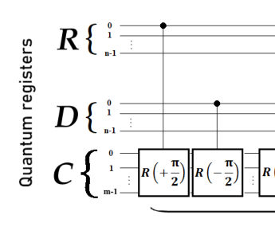
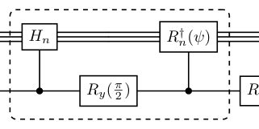
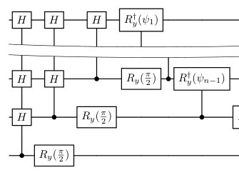
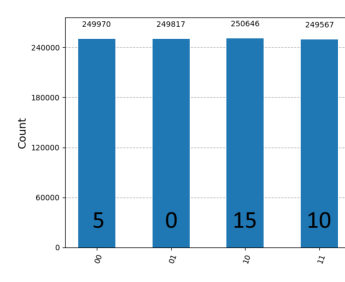
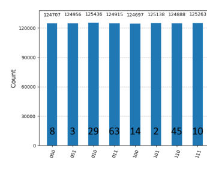
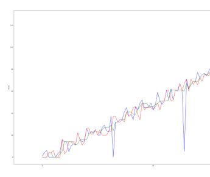
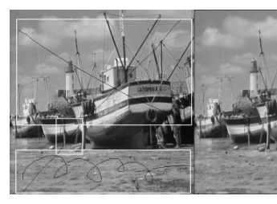
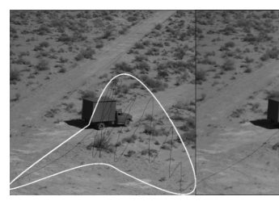
Main problem. Investigating the applicability of a Quantum Amplitude Redistribution Algorithm (QARA) to the data filtering problem, specifically for removing outliers from digitized signals and images.
Main result. The algorithm achieves a computational complexity of O(n) relative to bit-width, providing a significant speedup over classical O(M log M) median filters for large arrays, though it performs slightly lower in filtering quality.
Method. The authors develop a quantum circuit model using controlled rotations and a recursive unitary matrix construction to redistribute probability amplitudes, then compare its performance against classical median filters on 1D signals and 2D images.
Summary. This paper proposes a quantum algorithm designed to replace classical median filters for tasks like signal and image denoising. By using quantum amplitude redistribution, the algorithm can identify and filter outliers with a complexity that depends on the bit-width rather than the array size. While the filtering quality is slightly lower than classical methods, the potential for significant computational speedup on large datasets is demonstrated. The study includes testing on 1D signals and 2D images across various resolutions and formats.
Model / system. A quantum circuit model using n-qubit registers, where Register D contains array elements and Register C contains indices, utilizing a parameterized unitary transformation R_n(phi).
Key observables. The measured index j from the counter register, which yields the filtered value A_j, and the probability distribution P(C_k) of measuring specific indices.
Important parameters / regimes. Array size M, number of qubits n, reference value r, rotation angle phi, and window width for image processing.
Assumptions / limitations. The algorithm assumes input data can be represented as non-negative n-bit integers and requires elements in the processed array to be distinct for optimal performance.
Figures summary. Figures illustrate the quantum loading process, the schematic of probability redistribution, the recursive gate decomposition, and comparative results of filtering noisy signals and various image formats (PNG, TIFF, JPG).
Paper structure. The paper begins by defining the algorithm's input/output, provides a mathematical proof of the transformation's unitarity, details an optimized gate decomposition, and concludes with a comparative performance analysis against classical filters.
This paper presents an analysis of the applicability of a quantum amplitude redistribution algorithm to the data filtering problem and the results of modeling the algorithm's operation in comparison with a median filter.
Authors: Frans Perkkola, Arianne Meijer-van de Griend, Jukka K. Nurminen
Type: theory · Category: quantum information and computing · PDF: https://arxiv.org/pdf/2604.23777v1
Analysis basis: full PDF text, analyzed in chunks
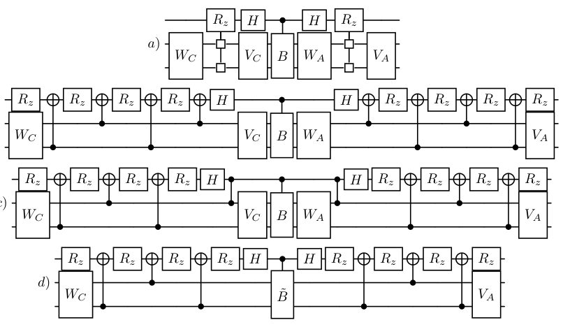
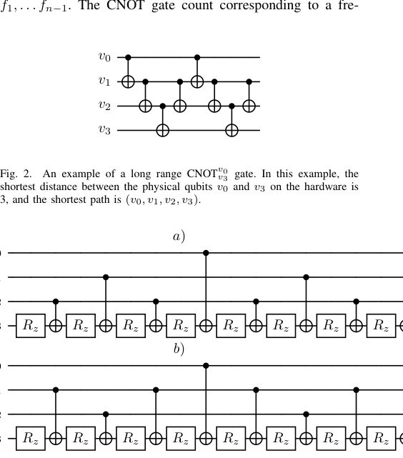
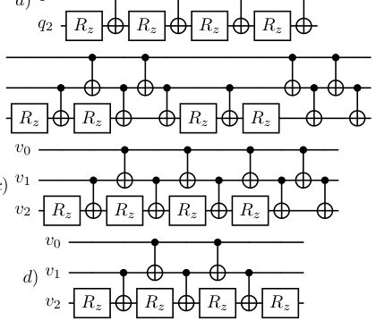
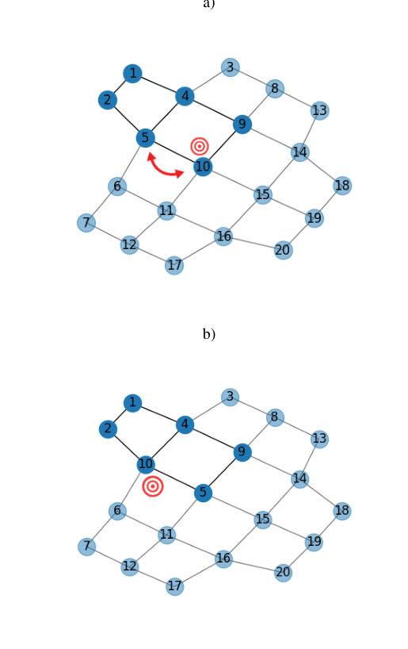
Main problem. The inefficient transpilation of generic n-qubit unitary transformations into hardware-specific gate sequences, which leads to high CNOT gate counts and long compilation runtimes.
Main result. The proposed architecture-aware method achieves up to a 36% reduction in CNOT counts and up to a 553x speedup in transpilation time compared to leading compilers like TKet, Qiskit, and PennyLane.
Method. An integrated approach that embeds transpilation into the recursive block-ZXZ decomposition using greedy qubit mapping, adaptive Gray code selection, and a CNOT reduction heuristic for long-range ladders.
Summary. This paper presents a new way to compile quantum circuits by making the synthesis process aware of the underlying hardware architecture from the start. Instead of treating hardware constraints as a final step, the method integrates qubit mapping and gate optimization directly into the mathematical decomposition of the unitary. This results in significantly fewer CNOT gates and much faster compilation speeds. It is particularly effective for scaling up the synthesis of larger unitaries on real-world superconducting hardware.
Model / system. The method is benchmarked on superconducting quantum architectures, specifically the 20-qubit IQM Garnet (square lattice) and the 156-qubit IBM Marrakesh (heavy-hex) topologies.
Key observables. CNOT gate count, transpilation runtime, and CNOT gate ratio relative to the theoretical lower bound.
Important parameters / regimes. Qubit counts ranging from 3 to 11; time limit of 30 minutes for scalability testing.
Assumptions / limitations. The method focuses on exact unitary synthesis rather than numerical approximations and assumes hardware connectivity is restricted to adjacent physical qubits.
Figures summary. Figure 1 shows CNOT merging in a 3-qubit unitary; Figure 2 visualizes a long-range CNOT ladder; Figure 3 compares standard vs. optimized Gray codes; Figure 4 illustrates qubit swapping; Figure 5 shows the logical-to-physical decomposition of a UC gate.
Paper structure. The paper introduces the problem of post-processing inefficiency, details the architecture-aware synthesis algorithm (including mapping, Gray code, and swapping techniques), presents benchmarking results against industry-standard transpilers, and discusses scalability and limitations.
We present a novel architecture-aware transpilation method for exact general unitary gate synthesis on superconducting quantum hardware. Our approach is tightly integrated with the optimized block-ZXZ decomposition, exploiting its recursive structure to make hardware-aware decisions at each level of the recursion rather than treating transpilation as an independent post-processing step. The method introduces three key techniques: a greedy qubit mapping strategy that minimizes pairwise distances between physical qubits, an adaptive Gray code selection combined with qubit swapping that optimizes the construction of uniformly controlled Rz gates for the target topology, and a heuristic for reducing CNOT gates by exploiting the structure of long-range CNOT ladders. We benchmark our method against TKet, Qiskit, and Pennylane on the 20-qubit IQM Garnet (square lattice) and the 156-qubit IBM Marrakesh (heavy-hex) architectures with qubit counts ranging from 3 to 11. Our method achieves CNOT count reductions of up to 36 percent on the IQM Garnet and up to 34 percent on the IBM Marrakesh compared to the best competing transpiler, while simultaneously achieving transpilation speedups of up to 553x. Furthermore, our method is the only one capable of transpiling circuits beyond 10 qubits within a 30-minute time limit across both architectures.
Authors: Jason D. Chadwick, Frederic T. Chong
Type: theory · Category: quantum information and computing · PDF: https://arxiv.org/pdf/2604.24739v1
Analysis basis: full PDF text, analyzed in chunks









Main problem. The difficulty of implementing high-rate QLDPC codes on semiconductor spin qubit architectures due to the mismatch between non-local code connectivity and the physical constraints of qubit shuttling, specifically regarding collision avoidance and shuttling-induced dephasing.
Main result. The development of the CAbLECAR framework and Q-SIPP algorithm enables efficient, collision-free ancilla routing, demonstrating that specific QLDPC codes can outperform surface codes by orders of magnitude in logical error rate when shuttling errors are sufficiently low.
Method. The authors use a noise-aware circuit tailoring technique to mitigate dephasing and a quantum-adapted Safe Interval Path Planning (Q-SIPP) algorithm for automated, time-optimized ancilla scheduling, validated via Stim circuit-level simulations.
Summary. This paper addresses the challenge of implementing high-rate QLDPC codes on spin qubit platforms that rely on physical qubit shuttling. By introducing a new scheduling algorithm (Q-SIPP) and a noise-aware circuit tailoring technique, the authors show how to mitigate dephasing and avoid collisions during ancilla movement. Their results demonstrate that under appropriate noise regimes, these advanced codes can provide massive improvements in both encoding efficiency and logical error rates compared to the standard surface code.
Model / system. A tileable, modular semiconductor spin qubit architecture featuring a 2D grid of stationary data qubits and mobile ancilla qubits that are physically transported (shuttled) through interaction and readout zones.
Key observables. Logical error rate (pL), encoding efficiency (kd^2/n), shuttling overhead (ancilla movement counts), and physical error rates (p_sh, p_CX, p_H).
Important parameters / regimes. Shuttling error rates (ranging from 10^-1 to 10^-4), code parameters [[n, k, d]], and gate fidelities (approx 99.9%).
Assumptions / limitations. The evaluation assumes a simplified grid layout for data qubits and relies on the assumption that extremely low shuttling error rates (10^-4) are physically achievable.
Figures summary. Figure 1 shows the CAbLECAR framework overview; Figure 2 illustrates QEC syndrome extraction; Figure 3 depicts the tiled unit cell architecture; Figure 4 compares baseline vs. tailored circuits; Figure 5 shows logical error rate vs. shuttle error; Figure 6 displays an optimized movement schedule; Figure 7 visualizes collision resolution; Figure 8 compares shuttling overhead; Figure 9 shows encoding efficiency vs. overhead; Figure 12 compares various code families across error regimes.
Paper structure. The paper introduces the scalability bottleneck of surface codes, presents the CAbLECAR framework and Q-SIPP algorithm, details the noise-aware circuit tailoring technique, evaluates various QLDPC code families through circuit-level simulations, and concludes by identifying the performance crossover regime relative to the surface code.
Semiconductor spin qubits are a promising platform for large-scale quantum computing, but have yet to take full advantage of the broad class of quantum low-density parity check (QLDPC) codes, which promise high encoding rates and efficient logic but require nonlocal connectivity between physical qubits. In this work, we investigate the implementation of QLDPC codes on a tileable, shuttling-based spin qubit architecture. By tailoring syndrome extraction circuits to the shuttling noise model, we significantly improve on previous surface code proposals and extend the feasible shuttling range of the architecture by 5-10x, enabling the implementation of more complex codes with long-range interactions. Taking inspiration from the field of robotics, we develop a coordinated shuttle scheduling algorithm that supports arbitrary codes and use it to benchmark the logical performance of a variety of promising code families. We find that the optimized schedules are up to 86% faster than hand-optimized schedules for certain code families. Through detailed circuit-level simulations, we identify specific QLDPC codes that improve upon prior surface code implementations by orders of magnitude, increasing encoding efficiency and reducing logical error rates. This work demonstrates the potential of shuttling-based spin qubit hardware platforms for scalable and efficient fault-tolerant quantum computation.
Authors: Santiago Cabrera, Gonzalo De Polsi, Adam Rançon, Nicolás Wschebor
Type: theory · Category: statistical mechanics · PDF: https://arxiv.org/pdf/2604.24675v1
Analysis basis: full PDF text, analyzed in chunks
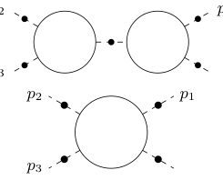
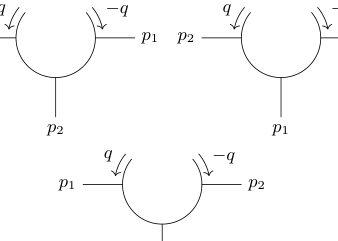
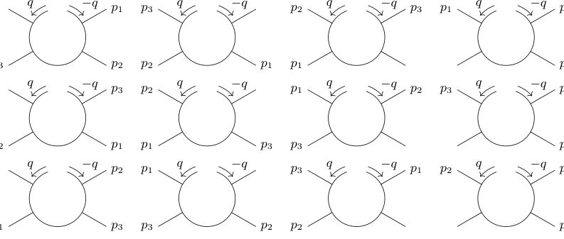
Main problem. The paper investigates whether scale invariance automatically enhances to full conformal invariance at renormalization group fixed points in dimensions d > 2, specifically for the O(N) universality class.
Main result. The authors provide two rigorous proofs—one functional and one vertex-by-vertex—demonstrating that the large-N limit of the O(N) universality class is conformally invariant at the Wilson-Fisher fixed point.
Method. The study utilizes the Non-Perturbative Renormalization Group (NPRG) framework, employing Legendre transforms and analyzing modified Ward identities induced by an infrared regulator.
Summary. This paper provides a rigorous mathematical proof that the large-N limit of the O(N) universality class possesses full conformal symmetry. Using the non-perturbative renormalization group framework, the authors show that the scale-invariant Wilson-Fisher fixed point satisfies the necessary Ward identities for special conformal transformations. The work clarifies how the theory's structure reorganizes to realize this symmetry and provides general insights into the conditions for symmetry enhancement at criticality.
Model / system. The model is the O(N)-symmetric scalar phi^4 theory, which includes universality classes such as the Ising, XY, and Heisenberg models, analyzed in the large-N limit.
Key observables. Correlation functions, critical exponents (such as nu), scaling dimensions (D_phi, D_sigma), and the energy-momentum tensor.
Important parameters / regimes. Dimension d (2 < d < 4), the large-N limit, the renormalization group scale k, and the vanishing anomalous dimension (eta = 0).
Assumptions / limitations. The proofs are specifically restricted to the large-N limit where the anomalous dimension eta is zero, and they assume the system is at the Wilson-Fisher fixed point.
Figures summary. The figures consist of diagrammatic representations of various vertex functions (H2, H3, gamma4) and their constituent loop channels and momentum-dependent contributions.
Paper structure. The paper introduces the problem of conformal symmetry in d > 2, establishes the NPRG framework and modified Ward identities, presents a functional proof of conformal invariance, provides a vertex-by-vertex proof in Fourier space, and concludes with detailed mathematical appendices verifying the algebraic identities.
Conformal symmetry is expected to be realized in many equilibrium statistical mechanical systems at criticality. Although this is certainly true in two-dimensional systems, the three-dimensional case is subtler, and only a few proofs exist, only so in very specific cases. In this work, we give two proofs for the large $N$ limit of the $O(N)$ universality class within the non-perturbative renormalization group framework: one functional, and one vertex-by-vertex in Fourier space. While doing so, we unveil how the theory is structured in order for conformal symmetry to be realized. As a consequence, we shed light on what to expect, on rather general grounds, for a theory to be conformally invariant.
Authors: Chi-Sheng Chen, En-Jui Kuo
Type: theory · Category: quantum information and computing · PDF: https://arxiv.org/pdf/2604.23931v1
Analysis basis: full PDF text, analyzed in chunks
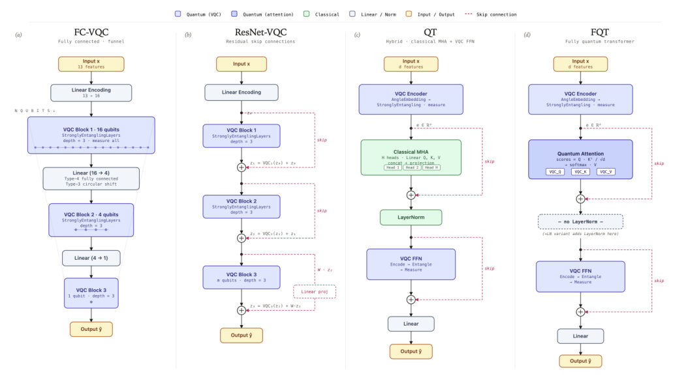
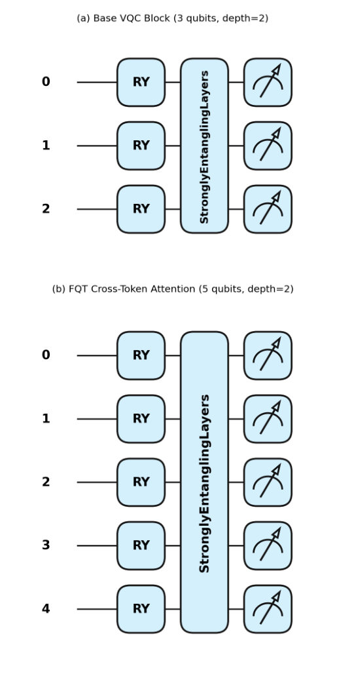
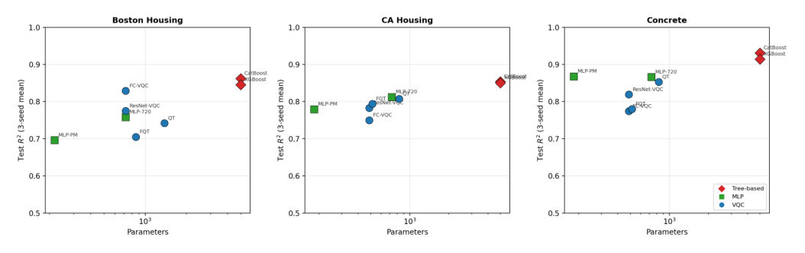
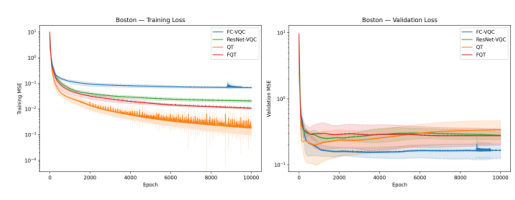
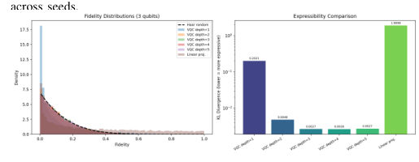
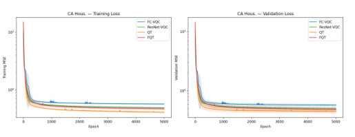
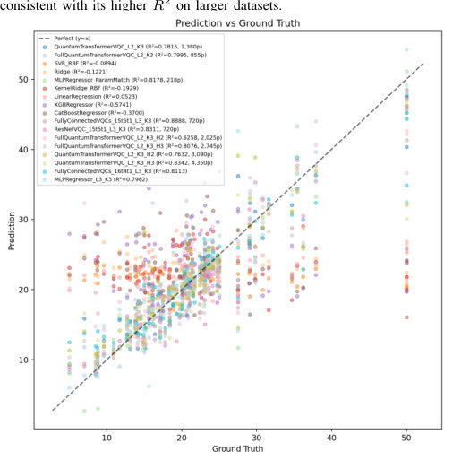
Main problem. The study addresses the lack of systematic architectural comparisons for Variational Quantum Circuits (VQCs) on classical tabular data, specifically investigating the trade-off between accuracy and parameter efficiency in quantum transformer architectures.
Main result. FC-VQCs achieve 90-96% of the R2 of attention-based VQCs with 40-50% fewer parameters and outperform equal-capacity MLPs, while Fully Quantum Transformers (FQT) show superior robustness to depolarizing noise compared to hybrid Quantum Transformers (QT).
Method. The authors perform a systematic empirical comparison of four VQC families across five regression and classification benchmarks using PennyLane simulations, evaluating metrics like R2, accuracy, expressibility (KL divergence), and noise robustness.
Summary. This paper provides a systematic comparison of different variational quantum circuit architectures for processing tabular data. It finds that simpler fully-connected VQCs are highly parameter-efficient and often outperform more complex quantum transformer models on small datasets. Notably, it demonstrates that fully quantum architectures are more robust to depolarizing noise than hybrid architectures. These findings offer practical guidance for designing efficient quantum machine learning models for near-term quantum hardware.
Model / system. The study uses various VQC architectures (FC-VQC, ResNet-VQC, QT, and FQT) based on a parameterized ansatz of single-qubit rotations and CNOT entangling layers, applied to classical tabular datasets.
Key observables. R2 (coefficient of determination), classification accuracy, macro-averaged F1 score, KL-divergence (for expressibility), and parameter efficiency.
Important parameters / regimes. Circuit depth (d), number of attention heads (H), number of tokens (T), and depolarizing noise rate (pd).
Assumptions / limitations. The study assumes the relevance of NISQ-era constraints and relies on classical CPU simulations of quantum circuits.
Figures summary. Figure 1 provides an architectural overview; Figure 2 shows circuit diagrams; Figure 3 compares accuracy vs. parameter count; Figure 4 shows training/validation loss curves; Figure 5 shows fidelity distributions; Figure 6 shows convergence on larger datasets; Figure 7 shows prediction vs. ground truth.
Paper structure. The paper introduces the architectural problem, defines the four VQC families, details the experimental setup and benchmarks, presents comparative results on accuracy and efficiency, analyzes expressibility and noise robustness, and concludes with practical guidance for NISQ deployment.
Variational quantum circuits (VQCs) are a leading approach to quantum machine learning on near-term devices, yet it remains unclear which circuit architecture yields the best accuracy-parameter trade-off on classical tabular data. We present a systematic empirical comparison of four VQC families -- multi-layer fully-connected (FC-VQC), residual (ResNet-VQC), hybrid quantum-classical transformer (QT), and fully quantum transformer (FQT) -- across five regression and classification benchmarks. Our key findings are: \textbf{(i)}~FC-VQCs achieve 90-96\% of the $R^2$ of attention-based VQCs while using 40-50\% fewer parameters, and consistently outperform equal-capacity MLPs (mean $R^2{=}0.829$ vs.\ MLP$_{720}$'s $0.753$ on Boston Housing, 3-seed average); \textbf{(ii)}~FC-VQC's Type~4 inter-block connectivity provides partial cross-token mixing that approximates the role of attention -- explicit quantum self-attention yields only marginal gains on most datasets while significantly increasing parameter count; \textbf{(iii)}~expressibility saturates at circuit depth~${\approx}\,3$, explaining why shallow VQCs already cover the Hilbert space effectively; \textbf{(iv)}~LayerNorm on the fully quantum transformer improves classification accuracy, suggesting normalization is important when all operations are quantum; \textbf{(v)}~in our noise study on Boston Housing, FQT degrades gracefully under depolarizing noise while QT collapses. All results are validated across three random seeds. These findings provide practical architectural guidance for deploying VQCs on near-term quantum hardware.
Authors: Fengxia Liu, Zixian Gong, Kun Tian, Yi Zhang, Zhiming Zheng, Maozhi Xu
Type: theory · Category: quantum information and computing · PDF: https://arxiv.org/pdf/2604.23490v1
Analysis basis: full PDF text, analyzed in chunks
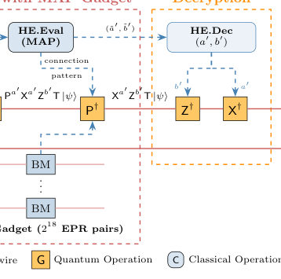
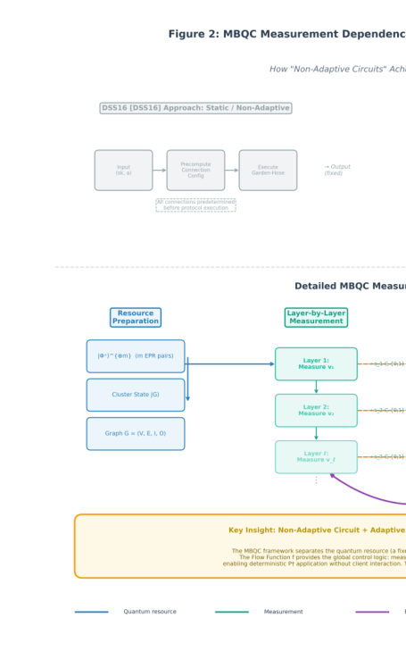
Main problem. Existing Quantum Fully Homomorphic Encryption (QFHE) schemes suffer from an exponential growth in quantum resource demands, specifically the number of EPR pairs required for quantum gadgets, relative to circuit depth.
Main result. The authors achieve an exponential improvement in efficiency, reducing the gadget size from O(lambda^2.58) to O(lambda log^2 lambda) EPR pairs, representing a concrete improvement factor of 2^15 to 2^18 for standard security parameters.
Method. The paper introduces a unified framework integrating Modular Arithmetic Programs (MAP), the garden-hose model, and Measurement-Based Quantum Computation (MBQC) to exploit the algebraic structure of LWE decryption.
Summary. This paper presents a highly efficient framework for Quantum Fully Homomorphic Encryption (QFHE) that significantly reduces the quantum resource overhead. By replacing generic Boolean circuit simulations with a specialized Modular Arithmetic Program (MAP) that tracks partial sums, the authors reduce the required number of EPR pairs from exponential to near-linear scaling. The resulting scheme supports fully classical clients and relies on standard classical LWE assumptions. This work moves QFHE from a theoretical concept toward a more practical implementation for secure quantum cloud computing.
Model / system. The framework utilizes the Measurement-Based Quantum Computation (MBQC) model with a garden-hose protocol, employing the Quantum One-Time Pad (QOTP) and the Learning-with-Errors (LWE) cryptographic assumption.
Key observables. Gadget size (number of EPR pairs), branching program width and length, and security parameter lambda.
Important parameters / regimes. Security parameter lambda, LWE modulus q, and error standard deviation sigma (e.g., 3.2).
Assumptions / limitations. The scheme assumes a semi-honest server, the hardness of the classical LWE problem, and ideal, noiseless quantum operations (perfect EPR pairs and error-free measurements).
Figures summary. Figure 1 shows a quantum circuit diagram for T-gate evaluation; Figure 2 illustrates the MBQC dependency flow; Algorithm 1 and 2 compare different branching program approaches.
Paper structure. The paper identifies the efficiency bottleneck in QFHE, proposes a novel MAP tailored for LWE decryption, establishes a mapping via the garden-hose model to MBQC, provides complexity analysis and security proofs, and concludes with a comparison of concrete resource requirements.
Quantum fully homomorphic encryption (QFHE) promises secure delegated quantum computation but has been impeded by the prohibitive quantum resource demands of existing constructions. This paper introduces a unified framework that achieves an \textbf{exponential improvement} in efficiency by synergistically integrating three theoretical tools: \textbf{modular arithmetic programs (MAP)}, the \textbf{garden-hose model}, and \textbf{measurement-based quantum computation (MBQC)}. Our central innovation is a novel MAP tailored to the algebraic structure of Learning-with-Errors (LWE) decryption. Unlike generic approaches that incur exponential overhead, our MAP computes the inner product $\langle \boldsymbol{sk}, \boldsymbol{c} \rangle \bmod q$ by tracking a partial sum modulo $q$, requiring only $O(\log q)$ bits of state width. This yields branching programs of width $O(\log λ)$ and length $O(λ\log λ)$, thereby reducing the size of the essential quantum gadget from $O(λ^{2.58})$ to $O(λ\log^2 λ)$ EPR pairs -- a concrete improvement factor of $2^{15}$ to $2^{18}$ for standard security parameters. Critically, we demonstrate that LWE decryption is not a \textbf{symmetric function}, necessitating our specialized MAP design beyond prior symmetric-function optimizations. The framework provides a direct mapping from the MAP to an efficient gadget via the garden-hose model, with MBQC furnishing the deterministic control flow for homomorphic evaluation. The resulting QFHE scheme supports \textbf{fully classical clients}, relies solely on the \textbf{classical LWE assumption} (avoiding circular security or quantum hardness assumptions), and maintains compactness. This work dramatically lowers the quantum resource barrier for practical QFHE, paving the way for realistic privacy-preserving quantum cloud computing.
Authors: Yuri Yu. Tarasevich, Andrei V. Esrkepov, Irina V. Vodolazskaya
Type: theory · Category: disordered systems and neural networks · PDF: https://arxiv.org/pdf/2604.24211v1
Analysis basis: full PDF text, analyzed in chunks
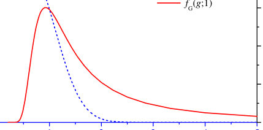
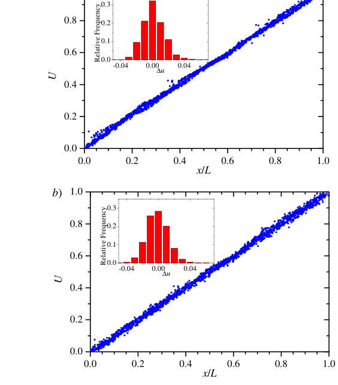
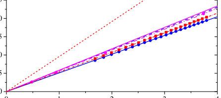
Main problem. Evaluating the accuracy of analytical models, specifically Mean Field Approximation (MFA) and Effective Medium Theory (EMT), in predicting the electrical conductivity of crack-template-based transparent conducting films.
Main result. The MFA overestimates conductivity by approximately 13% for the original network and 79% for the effective network, with EMT being more accurate for periodic hexagonal lattices than for random Poisson-Voronoi diagrams.
Method. The study uses analytical approaches (MFA and EMT) combined with direct numerical simulations of 2D Poisson-Voronoi diagrams and periodic hexagonal networks to compare predicted versus actual conductivity.
Summary. This paper investigates how accurately standard analytical approximations can predict the electrical conductivity of random networks used in transparent conducting films. By modeling these films as Poisson-Voronoi diagrams, the authors demonstrate that the Mean Field Approximation significantly overestimates conductivity, especially in simplified 'effective' networks. The study highlights that structural homogeneity, such as in a hexagonal lattice, is crucial for the accuracy of Effective Medium Theory. These findings serve as a warning for researchers using simplified models to design hierarchical or complex crack-based electronic components.
Model / system. The system consists of crack-template-based transparent conducting films modeled as 3-regular planar graphs corresponding to the edges of a 2D Poisson-Voronoi diagram, where edge conductivity is related to edge length.
Key observables. Electrical conductivity (G), edge length (l), edge conductivity (g), and node potential fluctuations (delta u).
Important parameters / regimes. Seed concentration (ns), areal mass density (mu), and conductivity constant (lambda).
Assumptions / limitations. The network is assumed to be macroscopically homogeneous and isotropic, with edge orientations and lengths being independent variables; metal conductivity is assumed temperature-independent.
Figures summary. Figure 1 shows probability density functions for edge length and conductivity; Figure 2 displays node potential distributions; Figure 3 compares conductivity results across different network types against theoretical predictions.
Paper structure. The paper introduces the problem of modeling crack-based films, defines the mathematical model using Poisson-Voronoi diagrams, applies MFA and EMT analytical frameworks, performs numerical simulations for validation, and concludes with a discussion on the error sources and limitations of the approximations.
In our work, crack-template-based transparent conducting films were modeled as networks corresponding to the edges of a two-dimensional Poisson--Voronoi diagram. Two types of networks were considered: the original one, in which the conductivity of each edge was inversely proportional to its length, and the effective one, where all edges had the same conductivity obtained from the effective medium theory. The mean field approximation was used for analytical evaluation of the electrical conductivity. Direct numerical calculations for the Poisson--Voronoi diagram showed that the mean field approximation overestimated the conductivity of the original network by approximately 13\%, and of the effective network by 79\%. In addition, a hexagonal network with an edge conductivity distribution corresponding to the Poisson--Voronoi diagram was studied: for it, the predictions of the effective medium theory turned out to be more accurate than for the Poisson--Voronoi diagram, which was explained by the greater structural homogeneity of the periodic hexagonal lattice. Our results showed that when modeling crack-template-based transparent conducting films, especially in the case of hierarchical cracks with variable width (where the resistance was not simply proportional to the length), the application of the mean field approximation could potentially lead to significant errors.
Authors: G. Gatti, C. Berthod, J. Issing, M. Straub, S. Mandloi, Y. Alexanian, J. Avila, P. Dudin, T. K. Kim, M. D. Watson, C. Cacho, K. Watanabe, T. Taniguchi, W. Wang, N. Clark, R. Gorbachev, N. Ubrig, I. Gutierrez-Lezama, A. F. Morpurgo, A. Tamai, F. Baumberger
Type: both · Category: strongly correlated electrons · PDF: https://arxiv.org/pdf/2604.24139v1
Analysis basis: full PDF text, analyzed in chunks
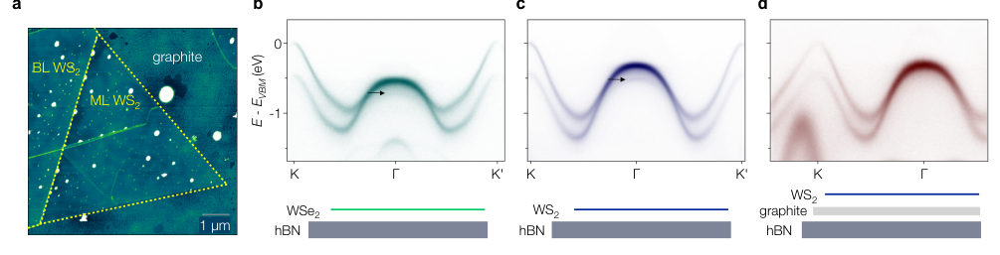
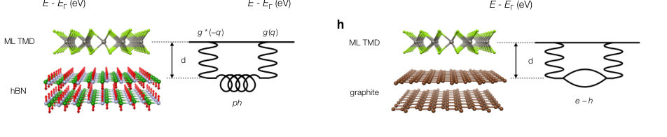
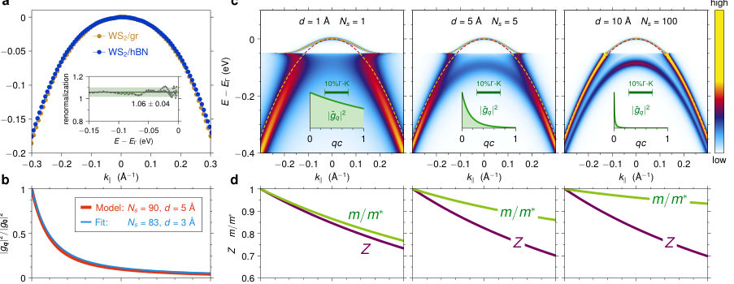
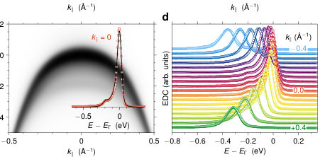
Main problem. The study aims to detect and quantify long-range electron-phonon coupling (EPC) across the van der Waals interface between transition metal dichalcogenides (TMDs) and hexagonal boron nitride (hBN).
Main result. The researchers demonstrate that quasiparticles in TMDs are dressed by a remote cloud of phonons from the adjacent hBN layer, characterized by a long-range, forward-scattering interaction that suppresses mass enhancement.
Method. The study uses micro-focus angle-resolved photoemission spectroscopy (mu-ARPES) combined with a modified Fröhlich model and global optimization of a self-energy-based spectral function.
Summary. This paper identifies that electrons in TMD monolayers are significantly affected by phonons residing in the adjacent hBN layer. By using high-resolution ARPES, the authors observe 'replica bands' that serve as a fingerprint of this remote electron-phonon coupling. They show that this interaction is long-range and characterized by forward scattering, which explains why the expected increase in effective mass is not observed. This finding suggests that the properties of vdW heterostructures can be tuned by the vibrational modes of adjacent layers.
Model / system. The physical system consists of monolayer TMDs (WS2 and WSe2) on hBN substrates, compared against a control system with a graphite buffer layer. The theoretical framework uses a 2D electron liquid coupled to a 3D polar substrate via a Fröhlich-type Hamiltonian.
Key observables. Replica bands (satellites), quasiparticle residue (Z), effective mass enhancement (m*/m), and energy distribution curves (EDCs).
Important parameters / regimes. Phonon energies (hBN LO/ZO and TMD LO/A1 modes), coupling strengths (alpha), separation distance (d), and number of hBN layers (Ns).
Assumptions / limitations. The model assumes dispersionless phonon modes and a 2D electron gas interacting with a polar 3D ionic substrate.
Figures summary. Figure 1 shows AFM topography and ARPES spectral functions; Figure 2 displays spectral function analysis and EDCs; Figure 4 presents theoretical ARPES bandmaps and fits to experimental data.
Paper structure. The paper introduces the challenge of interlayer interactions, describes the experimental setup and sample preparation, presents the discovery of remote phonon satellites, develops a modified Fröhlich model to explain the data, and discusses the implications for mass enhancement and universality.
Why it may be interesting. The discovery of a long-range, forward-scattering interaction that decouples quasiparticle residue from effective mass provides a unique example of how momentum-dependent many-body interactions can fundamentally alter the renormalization of particles in 2D systems.
Many-body interactions can couple electronic states in one layer with collective excitations in the adjacent layer, providing a route to tailor properties of heterostructures. However, detecting and quantifying interlayer many-body interactions proved a major challenge. Here, we demonstrate that quasiparticles in monolayer transition metal dichalcogenides (TMDs) are dressed by a remote cloud of phonons in the adjacent hexagonal boron nitride slab. Using angle resolved photoemission, we identify replica bands in the TMDs which are a clear fingerprint of long-range electron-phonon interaction. We develop a modified Fröhlich model that shows semi-quantitative agreement with the experimental spectral functions. Our analysis shows that remote electron-phonon coupling is a generic property of interfaces with hBN. This has implications for electron mobilities in 2D materials, for superconductivity and possibly for moiré correlated phases.
Authors: Robert T. Nachtrieb
Type: theory · Category: statistical mechanics · PDF: https://arxiv.org/pdf/2604.22995v1
Analysis basis: full PDF text, analyzed in chunks
Main problem. The paper seeks to derive the equations of motion for economic growth and firm survival without assuming a production function, specifically distinguishing between capital deepening and productivity improvement.
Main result. The study finds that historical growth has been driven by a 'structural cheapening' channel (mu) rather than a 'productivity' channel (phi), which has been zero for 75 years, and predicts that a small positive phi would significantly accelerate growth.
Method. The author uses a dynamical systems approach with four coupled ordinary differential equations, calibrated against BEA and BDS economic datasets using the Nelder-Mead algorithm and Kalman filtering.
Summary. This paper develops a dynamical model of economic growth based on accounting identities rather than traditional production functions. It identifies two distinct channels for capital productivity: one that makes capital cheaper and one that makes it more capable. By analyzing decades of US economic data, the author demonstrates that the productivity channel has been stagnant (zero) for the last 75 years. The paper concludes with a specific, testable prediction that a small increase in the productivity channel could nearly double the aggregate growth rate.
Model / system. A competitive economy modeled at the sector level as a dynamical system of coupled relaxation equations governing capital per worker, capital productivity, and labor share, linked to micro-scale firm dynamics via a cash martingale and Zipf's law.
Key observables. Real output per worker (y), capital per worker (kappa), capital productivity (eta), and firm exit rates.
Important parameters / regimes. mu (structural cheapening rate), phi (productivity improvement rate), eta* (profit imperative/breakeven productivity), and alpha (Zipf exponent).
Assumptions / limitations. The model assumes a competitive economy, uses accounting identities instead of production functions, and treats firm cash reserves as a martingale under i.i.d. shocks.
Figures summary. Figure 2 provides a forecast of output per worker, comparing historical BEA trends and a business-as-usual projection against a testable prediction of increased growth if the productivity channel (phi) becomes positive.
Paper structure. The paper begins with the derivation of equations of motion from accounting identities, introduces the two-channel productivity model, presents calibration results against historical US sector data, connects macro-dynamics to micro-scale firm exit rates, and concludes with a falsifiable growth prediction.
We derive equations of motion for capital deepening in a competitive economy directly from accounting identities, without assuming a production function. A profit imperative $η^* \equiv (w/κ+ 1/τ)/(1-f_p)$ sets the minimum viable capital productivity, where $η= Y/K$ [yr$^{-1}$] is capital productivity, $κ= K/L$ is capital per worker, $w$ is the wage rate, $τ$ is the capital lifetime, and $f_p$ is the production tax share. Four coupled relaxation equations govern $κ$, $η$, the frontier productivity $η_{\rm new}$ of new investment, and the labor share $q \equiv w/y$, with the sandwich constraint $η^* \leq η_{\rm new} \leq η$ maintained as an exact invariant. The frontier equation separates two physically distinct channels: a structural cheapening channel ($μ$, always active, drives $η_{\rm new}$ downward) and a productivity channel ($φ$, historically zero). Calibration against BEA 2-digit NAICS sector data (1998--2023) confirms $φ= 0$ for all identifiable sectors over 25 years; the 75-year postwar record extends this finding across four capital lifetimes. A step $φ= 0.01$\,yr$^{-1}$ -- a 1\%/yr improvement in new-capital productivity, modest but historically unprecedented -- nearly doubles the aggregate growth rate within one capital lifetime, a falsifiable prediction with a precise observable signature: upward-curving $η(t)$ in BEA sector data. Firms near the zero-profit threshold have a cash martingale, predicting establishment exit rate $\sim t^{-1/2}$; convolved with the Zipf firm-size distribution~\cite{WP}, this yields firm exit rate $\sim t^{-1/2}\!\log t$ with apparent exponent $b = 0.295 \pm 0.03$, confirmed against BDS data with no free parameters.
Authors: Zimeng Li, Ning Wu
Type: theory · Category: strongly correlated electrons · PDF: https://arxiv.org/pdf/2604.23149v1
Analysis basis: full PDF text, analyzed in chunks
Main problem. The paper seeks to establish an exact connection between real-space and momentum-space representations of the $J_1$-$J_2$ spin chain and to analyze the energy spectrum and ground-state properties of small spin-1/2 rings.
Main result. The authors successfully block-diagonalize the Hamiltonian for $N=6$ and $N=8$ rings into small matrices and demonstrate that momentum-space manifestations of the Majumdar-Ghosh and HKNN ground states are equivalent to their real-space dimer counterparts.
Method. The study utilizes an exact momentum-space analysis based on a set of few-magnon Bloch states to reduce the Hamiltonian into small block matrices, combined with analytical solutions and dimer expansion techniques.
Summary. This paper provides an exact analytical and numerical framework for studying small $J_1$-$J_2$ spin rings in momentum space. By using few-magnon Bloch states, the authors reduce the complex many-body problem into much smaller, manageable matrix blocks. They explicitly show how well-known real-space dimerized ground states, like the Majumdar-Ghosh state, appear in momentum space. The study also identifies zero-energy states and suggests that the HKNN ground state may behave as a bound state of magnons.
Model / system. The system consists of $N=6$ and $N=8$ site spin-1/2 $J_1$-$J_2$ rings with nearest-neighbor and next-nearest-neighbor exchange interactions, including both isotropic and anisotropic (XXZ) cases.
Key observables. Eigenenergies, eigenstates, total angular momentum ($l$), momentum ($k$), magnetization ($M$), and spin correlation functions ($C_r$).
Important parameters / regimes. Exchange interaction ratio $J_1/J_2$, anisotropy parameters $\Delta_1$ and $\Delta_2$, and ring size $N$.
Assumptions / limitations. The analysis is limited to small ring sizes ($N=6, 8$), and certain sectors of the Hamiltonian could not be solved in closed form using Mathematica.
Figures summary. Figure 6 plots ground-state spin correlation functions ($C_r$) for different distances $r$, illustrating how they evolve with the $J_1/J_2$ ratio.
Paper structure. The paper introduces the $J_1$-$J_2$ model, details the momentum-space block-diagonalization method using Bloch states, analyzes the $N=6$ anisotropic and $N=8$ isotropic spectra, discusses specific ground-state points (MG and HKNN), and concludes with a conjecture on the nature of the HKNN state.
This paper considers an $N$-site spin-1/2 $J_1$-$J_2$ ring with $N=6$ and $8$. With the help of a set of exact few-magnon Bloch states, we obtain the block-diagonalized Hamiltonian consisting of block matrices of at most four dimensions. Partial of the eigenstates are analytically solved. For the six-site anisotropic ring, we reveal a subset of eigenstates that are simultaneous eigenstates of the Hamiltonian and the total angular momentum operator, even though the latter is not conserved. For both the six- and eight-site isotropic rings, we achieve momentum-space manifestations of several important states, including the famous Majumdar-Ghosh (MG) ground states and the Hamada-Kane-Nakagawa-Natsume (HKNN) ground state. The equivalence of these states with their real-space counterparts is explicitly shown for $N=6$. The structure of the HKNN ground state for small rings suggests that for any even number $N$ this state might behave like a ``bound state" with $N/2$ successive down spins binding together.
Authors: Marvin Schwiering, Timo Ziegler, Lennart Binkowski, Benjamin Sambale
Type: theory · Category: quantum information and computing · PDF: https://arxiv.org/pdf/2604.24297v1
Analysis basis: full PDF text, analyzed in chunks
Main problem. Addressing the reachability and feasibility issues in QAOA, where conventional circuits may not cover all optimal solutions or may include infeasible states for constrained combinatorial optimization problems.
Main result. The authors develop a pipeline to construct 'exhaustively parameterized, feasibility-respecting' quantum circuits that are guaranteed to reach every feasible solution with a fixed number of parameters, demonstrating superior performance on TSP instances.
Method. The method uses group theory, specifically identifying transitive group actions and generating sequences of involutions, to build parameterized unitaries that navigate the feasible subspace of a problem.
Summary. This paper introduces a new class of quantum circuits for combinatorial optimization that are guaranteed to reach all feasible solutions, including the optimum, without leaving the feasible subspace. By leveraging group theory and generating sequences of group elements, the authors provide a systematic way to build these circuits. They demonstrate that for the Traveling Salesperson Problem, a binary insertion-based construction significantly outperforms standard QAOA in numerical tests. This approach reduces the parameter space and improves the efficiency of the classical optimization process.
Model / system. The study focuses on the Traveling Salesperson Problem (TSP) modeled as an optimization over the symmetric group $S_n$, using both one-hot and compact qubit encodings.
Key observables. Approximation ratio (normalized expectation value of the objective Hamiltonian).
Important parameters / regimes. Number of variational parameters (scaling as $O(n^2)$ for bubble sort and $O(n \log n)$ for binary insertion) and the number of layers $p$.
Assumptions / limitations. The numerical validation assumes noiseless qubits and focuses on small-scale instances (up to 9 cities); it does not guarantee that the required optimal parameters can be found efficiently.
Figures summary. Figure 1 shows the abstract pipeline; Figure 2 illustrates the circuit construction flow; Figure 3 shows the implementation of exponentiated involutions using an ancilla; Figure 4 shows qubit connectivity; Figure 5 compares approximation ratios vs. optimization iterations for different methods.
Paper structure. The paper introduces the concept of exhaustive reachability, provides a group-theoretic mathematical framework (the abstract pipeline), applies this to TSP via bubble sort and binary insertion constructions, and concludes with numerical benchmarks and limitations.
This paper introduces the concept of exhaustively parametrised, feasibility-respecting quantum circuits for constrained combinatorial optimisation problems. Such circuits can reach, given the right parameter values, every feasible solution with certainty -- including the optimum -- with a fixed number of parameters, while avoiding infeasible solutions altogether. This is in sharp contrast to conventional quantum alternating operator ansatz schemes, which are merely guaranteed to reach the optimum asymptotically. We introduce an abstract pipeline for constructing exhaustively parametrised, feasibility-respecting circuits from a transitive group action on a problem's feasible set. Our constructions rely on the simple combination of the group action with group representation and the novel notion of generating sequences: group elements in fixed order, possibly with repetitions, that generate the entire group. That is, we trace expressivity of parametrised quantum circuits back to the most fundamental concepts of group theory. We apply this pipeline to two concrete examples for the travelling salesperson problem, thus showing that exhaustively parametrised, feasibility-respecting circuits are not an empty definition. Furthermore, we provide numerical proof-of-principles on instances with up to nine cities, comparing the suitability of our constructions for parameter optimisation purposes against established mixers.
Authors: Tatpong Katanyukul
Type: theory · Category: quantum information and computing · PDF: https://arxiv.org/pdf/2604.23531v1
Analysis basis: full PDF text, analyzed in chunks
Main problem. The paper aims to optimize the 'Eigenmarking' search algorithm for quantum entailment model checking by reducing the hardware complexity of required quantum gates.
Main result. The proposed 'Simpler Eigenmarking' scheme achieves significantly higher winning margins and better distinguishability using only two-qubit controlled phase rotations (CCZ gates), regardless of input size.
Method. The study refines the 'subtle marking' algorithm by replacing multi-qubit-controlled phase rotations with simpler CCZ gates and evaluates the performance using Qiskit-based two-qubit system simulations.
Summary. This paper proposes a more efficient version of the Eigenmarking quantum search algorithm designed for checking logical entailment. By replacing complex multi-qubit controlled rotations with simpler two-qubit CCZ gates, the author reduces the hardware burden for quantum computers. Simulations show that this simpler scheme provides much better distinguishability and a higher winning margin than previous methods. This makes the algorithm more viable for implementation on near-term quantum hardware.
Model / system. The research utilizes a quantum computing framework based on Grover's algorithm, specifically simulating a three-qubit system consisting of input qubits, a tag qubit, and an ancillary qubit.
Key observables. Winning Margin (W) and Distinguishability (D).
Important parameters / regimes. The relative local winning margin (W) and the worst-case distinguishability (D).
Assumptions / limitations. The results are based on two-qubit system simulations; scalability to many qubits and performance on real, noisy quantum hardware remain unproven.
Figures summary. Figure 1 shows classical logic gate simulation; Figure 2 displays the circuit diagram for the Simpler Eigenmarking system; Figure 3 shows experimental counts for target states; Figure 4 and 5 illustrate the implementation and results of entailment checking.
Paper structure. The paper introduces the problem of entailment model checking, reviews existing Eigenmarking schemes (Conventional and Subtle), proposes a refined CCZ-based scheme, presents simulation results comparing performance metrics, and discusses scalability and hardware implications.
Targeting entailment model checking, a recent study has pioneered an idea of Eigenmarking search, an improvement over Grover search using extra qubits. The extra qubits condition the quantum state evolution such that the answer states (if exist) are always in the minority. The minority criteria is essential to Grover probability-amplitude amplification and consequently the effectiveness of Grover search. In addition to enforce the minority criteria, Eigenmarking also employs complementary states (through well-orchestrated phase rotation) for easy identification of a no-answer case (related to a no-violation case in the context of model checking). Eigenmarking search has been shown effective in two-qubit simulations. The three Eigenmarking schemes have been previously proposed. Two schemes require two extra qubits. One scheme (called ``subtle marking'') requires one extra qubit with a multiple-qubit-controlled phase rotation. Our study refines the mechanism using only one extra qubit with only two-qubit-controlled phase rotation, commonly known as \texttt{ccz}, regardless of how many qubits the input has. Using a multiple-qubit-controlled phase rotation (as in subtle marking) associates with highly entangled states. Highly entangled states in a real quantum hardware are difficult (or in some cases may even be unachievable) particularly in a scaled up scenario involving many qubits. Our proposed new Eigenmarking scheme has lightened the burden for the hardware requirement. The new Eigenmarking search has been experimented in two-qubit-system simulations and shown viable, achieving the minimal relative local winning margin of W=3.17 and the worst-case distinguishability of D=0.769 (cf. W=0.67; D=0.19 from conventional marking and W=0.28; D=0.55 from subtle marking).
Authors: Vladislav Kurichenko, Parul Rani, Björgvin Hjörvarsson
Type: experiment · Category: disordered systems and neural networks · PDF: https://arxiv.org/pdf/2604.23222v1
Analysis basis: full PDF text, analyzed in chunks

Main problem. The study investigates how finite-size effects in amorphous Co70Zr30 thin layers influence magnetic properties, specifically the reduction in magnetic moment and ordering temperature.
Main result. The researchers found that decreasing layer thickness leads to a reduction in Tc and Ms following a 1/L scaling law, driven by interfacial regions with reduced magnetic interactions, and observed Griffiths phase behavior in the thinnest films.
Method. The study uses dc magnetron sputtering for film deposition, GIXRD and XRR for structural characterization, and SQUID magnetometry and MOKE for magnetic measurements.
Summary. This paper examines how the thickness of amorphous Co70Zr30 thin films affects their magnetic properties. As the films get thinner, the magnetic ordering temperature and saturation magnetization decrease due to the influence of interfacial regions. The study identifies a scaling relationship between these properties and the inverse of the thickness. Additionally, the researchers observe the presence of a Griffiths phase in very thin layers, where magnetic clusters persist above the critical temperature.
Model / system. The system consists of amorphous Co70Zr30 single-layer thin films with thicknesses ranging from 25 to 400 Angstroms, modeled as an interior magnetic region flanked by two interfacial regions.
Key observables. Saturation magnetization (Ms), magnetic ordering temperature (Tc), coercivity, interatomic distances, and magnetic anisotropy.
Important parameters / regimes. Thickness range (25-400 A), interface thickness (approx 10 A), and the transition from ferromagnetic to Griffiths phase behavior.
Assumptions / limitations. The magnetic layer is modeled as having an interior region and two interfacial regions that are effectively 'magnetically dead'.
Figures summary. Fig 1 shows GIXRD patterns; Fig 2 shows XRR patterns; Fig 3 shows thickness-dependent MOKE hysteresis loops; Fig 4 shows temperature-dependent magnetization (SQUID) and Tc reduction.
Paper structure. The paper introduces the problem of finite-size effects, describes the experimental deposition and structural characterization, presents magnetic measurement results, applies a scaling model to analyze thickness dependence, and discusses the emergence of the Griffiths phase.
Profound finite size effects are observed in both the moment and ordering temperature in thin Co$_{70}$Zr$_{30}$ layers. The results are consistent with the presence of interface regions with reduced magnetic interactions and moment. The extension of this region is determined to be around 1 nm thick at each interface. Above and near the apparent critical temperature, the magnetic properties can be understood in terms of Griffith phases.
Authors: Steven Szachara, Sheeraja Rajakrishnan, Dylan Jay Van Allen, Jason Pollack, Travis Desell, Daniel Krutz
Type: theory · Category: quantum information and computing · PDF: https://arxiv.org/pdf/2604.24551v1
Analysis basis: full PDF text, analyzed in chunks


Main problem. Managing quantum error mitigation (QEM) in the NISQ era by deciding when and how aggressively to apply mitigation techniques under time-varying, nonstationary noise while balancing fidelity gains against computational overhead.
Main result. The GSC-QEMit framework achieved a 9.0% average increase in logical fidelity relative to unmitigated execution and reduced unnecessary heavy interventions by approximately 35% compared to a static severe strategy.
Method. A three-module 'context-forecast-bandit' framework comprising a Growing Hierarchical Self-Organizing Map (GHSOM) for context discovery, a Sparse Variational Gaussian Process (SVGP) for fidelity forecasting, and a cost-aware contextual multi-armed bandit (CMAB) for decision making.
Summary. This paper presents GSC-QEMit, an adaptive framework designed to optimize quantum error mitigation in the presence of drifting noise. By using machine learning modules to cluster device telemetry, forecast future fidelity degradation, and select the most cost-effective mitigation level, the system avoids expensive interventions when noise is low. The approach demonstrates significant improvements in logical fidelity and resource efficiency across various quantum circuit workloads without requiring circuit-specific tuning.
Model / system. A simulated quantum backend using Qiskit Aer with a nonstationary noise model characterized by a bounded sinusoidal drift and stochastic fluctuations around a baseline physical error rate.
Key observables. Average logical fidelity, logical error rate (measured via Total Variation Distance), and intervention cost.
Important parameters / regimes. 13-dimensional telemetry feature vector, mitigation intensity levels (NONE, MODERATE, SEVERE), and the Lagrange multiplier (lambda) controlling cost-sensitivity.
Assumptions / limitations. Assumes the availability of streaming telemetry and a library of discrete mitigation primitives; assumes system health can be captured via telemetry and noise patterns can be forecasted.
Figures summary. Figure 2 shows a case study of the QFT circuit displaying a real-time barcode of selected intervention levels over time.
Paper structure. The paper introduces the problem of adaptive QEM, describes the three-module GSC-QEMit architecture (GHSOM, SVGP, and CMAB), details the simulation environment and noise model, presents performance results across various circuit families, and discusses the framework's generalizability and cost-efficiency.
Quantum error mitigation (QEM) is essential for extracting reliable results from near-term quantum devices, yet practical deployments must balance mitigation strength against runtime overhead under time-varying noise. We introduce \emph{GSC-QEMit}, a telemetry-driven, \textbf{context--forecast--bandit} framework for \emph{adaptive} mitigation that switches between lightweight suppression and heavier intervention as drift evolves. GSC-QEMit composes three coupled modules: (G) a Growing Hierarchical Self-Organizing Map (GHSOM) that clusters streaming telemetry into operating contexts; (S) an uncertainty-aware subsampled Gaussian-process forecaster that predicts short-horizon fidelity degradation; and (C) a cost-aware contextual multi-armed bandit (CMAB) that selects mitigation actions via Thompson sampling with explicit intervention cost. We evaluate GSC-QEMit on benchmark circuit families (GHZ, Quantum Fourier Transform, and Grover search) under nonstationary noise regimes simulated in Qiskit Aer, using an instrumented testbed where action labels correspond to graded mitigation intensity. Across Clifford, non-Clifford, and structured workloads, GSC-QEMit improves average logical fidelity by \textbf{+9.0\%} relative to unmitigated execution while reducing unnecessary heavy interventions by reserving them for inferred noise spikes. The resulting policies exhibit a favorable fidelity--cost trade-off and transfer across the evaluated workloads without circuit-specific tuning.
Authors: Pawat Akara-pipattana, Sergei Nechaev
Type: theory · Category: statistical mechanics · PDF: https://arxiv.org/pdf/2604.23152v1
Analysis basis: full PDF text, analyzed in chunks
Main problem. Investigating how the enrichment of local triangle motifs in rewired random regular graphs drives a phase transition and leads to the emergence of a scale-free degree distribution.
Main result. The authors identify a first-order phase transition between a triangle-poor and a triangle-rich phase, where the latter features an inter-cluster network with a universal power-law degree distribution exponent of gamma approximately 2.
Method. The study employs Metropolis Monte Carlo simulations, mean-field kinetic arguments, a chemical reaction model based on the law of mass action, and a hyperbolic embedding approach.
Summary. This paper explores how increasing the density of triangles in a network can spontaneously create a scale-free structure. By using a rewiring process controlled by a chemical potential (fugacity), the authors show that the network transitions from a homogeneous state to a clustered state where the connections between clusters follow a power-law distribution. They propose that this 'emergent preferential attachment' is driven by the way triangles aggregate. The study even suggests a deep connection between this topological phase and the Efimov effect in few-body physics.
Model / system. The system consists of Rewired Random Regular Graphs (RRGs) with a fixed vertex degree d, studied in a canonical ensemble where the number of triangles is controlled by a fugacity parameter lambda.
Key observables. Vertex degree distribution P(d), triangle count, Ollivier-Ricci curvature (ORC), and the scaling exponent gamma.
Important parameters / regimes. Fugacity (lambda), vertex degree (d), and the critical transition points (lambda_minus and lambda_plus).
Assumptions / limitations. Assumes a rigid constraint on vertex degree, uniform distribution of cluster saturation times, and stochastic distribution of inter-cluster edges.
Figures summary. Figure 1 shows different graph configurations (triangle-poor, triangle-rich, and maximal triangle) classified by ORC; Figure 6 shows the power-law degree distribution on a log-log scale; Figure 7 compares the frequency of isosceles vs. equilateral triangles.
Paper structure. The paper introduces the rewiring model and phase transition, describes the chemical reaction model for the triangle-poor phase, presents the mean-field derivation of the scale-free inter-cluster network, and concludes with a hyperbolic geometry interpretation and connection to Efimov-like states.
We study the statistics of rewired random regular graphs within the canonical ensemble, in which the average number of triangles is controlled by the fugacity $λ$. Using mean-field arguments, we estimate the location of the transition point $λ^{-}$. We focus primarily on the triangle-enriched phase above $λ^{-}$, where the graph becomes a loosely connected web of clusters. This inter-cluster network is scale-free and exhibits a power-law vertex degree distribution $P(d) \sim d^{-γ}$, with $γ\approx 2$ independent of degree and size of the graph. We attribute this behavior to an "emergent preferential attachment" for triangle motifs, derive the exponent $γ$ with a mean-field approach, and speculate on a possible connection between the typical topology of inter-cluster triangles and Efimov states in a conformally invariant potential.
Authors: V. N. A. Lula-Rocha, M. A. S. Trindade
Type: theory · Category: quantum information and computing · PDF: https://arxiv.org/pdf/2604.23382v1
Analysis basis: full PDF text, analyzed in chunks
Main problem. The paper investigates a non-unitary extension of Grover's search algorithm to achieve a single-step solution by modifying the hidden geometry of the Hilbert space.
Main result. The authors show that while a Kraus operator approach fails to provide a quantum advantage, using the Quantum Singular Value Transform (QSVT) with block encoding and Chebyshev polynomial approximation allows the algorithm to reach the Grover bound with only one additional qubit.
Method. The researchers use a geometric approach involving a generalized 2-rank tensor for the diffusion operator and analyze implementation via Kraus operators and QSVT-based block encoding.
Summary. This paper proposes a way to extend Grover's algorithm into a non-unitary regime by changing the metric tensor of the Hilbert space. While a simple non-unitary approach via Kraus operators results in no speedup over classical search, the authors demonstrate that using advanced techniques like the Quantum Singular Value Transform (QSVT) can achieve the optimal Grover complexity. This approach effectively performs the search in a single large rotation rather than many small ones, requiring only one extra ancilla qubit.
Model / system. The model is a generalized quantum amplitude amplification framework acting on an unstructured search space of size N, utilizing a non-unitary diffusion operator D_g and a Grover oracle U_f.
Key observables. Success probability (P_succ) and the rotation angle (theta) in the Hilbert space.
Important parameters / regimes. Search space size N, number of solutions M, rotation angles theta and phi, and the normalization factor p.
Assumptions / limitations. The construction of the generalized operator requires prior knowledge of the number of solutions M; the implementation relies on the ability to perform block encoding.
Paper structure. The paper defines the geometric nature of the diffusion operator, reviews the standard Grover algorithm, develops the mathematical tools for the non-unitary extension, presents the new algorithm, and concludes with a complexity analysis.
We have developed a non-unitary extension of Grover's search algorithm by changing the hidden geometry of Hilbert space carried by diffusion operator. Our algorithm finds the solution for search problem by performing a unique bigger rotation rather than small rotations in order polynomial times in the size $N$ of search space. We analyze the complexity of implementing the non-unitary operation and we observed that the price paid by performing this rotation is due the normalization. In Kraus operator approach we need $O(N)$ repetition of the algorithm to have a chance of measuring a solution in a post-selection, this is no better than the classical solution. However, the quantum singular value transform in addition with block encoding and Chebyshev polynomial approximation, we got complexity $O(\sqrt{N})$ and reach the Grover's bound with an extra resource of one single qubit, compared with the standard Grover's algorithm.
Authors: N. Johnson, D. Marenduzzo, A. Morozov, E. Orlandini, G. M. Vasil
Type: theory · Category: statistical mechanics · PDF: https://arxiv.org/pdf/2604.24688v1
Analysis basis: full PDF text, analyzed in chunks
Main problem. The paper seeks to provide a unified, geometrically interpretable algebraic framework for the 1D and 2D Ising models using Clifford and Conformal Geometric Algebras (CGA).
Main result. The authors show that the transfer matrix, eigenvectors, and quasiparticle excitations can be naturally represented as elements of a conformal Clifford algebra, where the transfer matrix acts as a dilation and eigenvectors correspond to Majorana-like modes.
Method. The study employs Clifford algebra Cl(1,1) and Cl(n,n) to reformulate the transfer-matrix solution, utilizing Hestenes spinors and the properties of conformal bivectors to reinterpret the model's dynamics.
Summary. This paper provides a new geometric perspective on the exactly solvable 1D and 2D Ising models. By using Clifford and Conformal Geometric Algebras, the authors reinterpret the transfer matrix as a dilation and the model's excitations as Majorana-like fermions. While the underlying physical results are well-established, this framework offers a more compact and unified algebraic description of scale transformations, duality, and quasiparticle dynamics.
Model / system. The paper analyzes the classical 1D and 2D Ising models on square lattices with periodic boundary conditions, focusing on the transfer-matrix formalism and the emergence of domain walls and quasiparticles.
Key observables. Partition function, transfer matrix eigenvalues, dispersion relation, and correlation length.
Important parameters / regimes. Coupling constant (K), dual coupling (K*), and the critical temperature/coupling (Kc).
Assumptions / limitations. The 2D model assumes periodic boundary conditions and the absence of an external magnetic field.
Figures summary. Figure 1 illustrates a domain wall in the 1D Ising model as a spin-flip via a bivector; Figure 2 displays the dispersion relation across high-temperature, critical, and low-temperature regimes.
Paper structure. The paper begins by introducing the Clifford algebra framework for the 1D model, extends the formalism to the 2D case using Cl(n,n), derives the dispersion relation and critical behavior, and concludes with a discussion on the pedagogical value of this geometric approach.
We revisit the classical transfer matrix solution of the one- and two-dimensional Ising model from the perspective of Clifford and conformal geometric algebras. Building on Kaufman's spinor formulation, we show that all elements entering the solution, including the transfer matrix, its eigenvectors, and the quasiparticle excitations, admit a natural and unified interpretation as elements of an appropriate conformal Clifford algebra. In particular, the transfer matrix can be viewed as a dilation generated by a conformal bivector, while its eigenvectors correspond to null combinations of Clifford generators, closely paralleling the emergence of Majorana fermionic degrees of freedom. In the two-dimensional case, the standard eigenvalue equation for the row-to-row transfer matrix is reinterpreted as a dispersion relation for quasiparticle excitations, exposing the connection between the Ising model and a theory of free Majorana fermions. While all the explicit exact results recovered are well known, this geometric reformulation provides a unified algebraic framework which is compact and physically interpretable. Specifically, this clarifies the role of scale transformations, fermionic modes, and duality in the Ising model. We believe this approach offers a useful pedagogical complement to more conventional fermionic, Grassmann, or field theoretic treatments.
Authors: Prajit Dhara, Babak N. Saif, Jeffrey H. Shapiro, Saikat Guha
Type: theory · Category: other · PDF: https://arxiv.org/pdf/2604.23417v1
Analysis basis: full PDF text, analyzed in chunks
Main problem. Determining the performance gap between theoretically optimal Prolate Spheroidal Wavefunction (PSW) modes and practical Gaussian beams in aperture-limited free-space optical communication links.
Main result. The paper proves that an aperture-truncated Gaussian beam with an optimized waist achieves the same transmissivity as the fundamental PSW mode, and derives a trace theorem showing total modal transmissivity depends only on the Fresnel number product.
Method. The authors use Singular Value Decomposition (SVD) of the Fresnel propagation kernel, numerical optimization of beam waist parameters, and analytical derivation of a trace theorem for the power-transfer operator.
Summary. This paper addresses the efficiency of light transmission in free-space optical communication. It demonstrates that while Prolate Spheroidal Wavefunctions are the mathematically optimal modes for aperture-limited channels, standard Gaussian beams with optimized widths can achieve identical transmission performance. Furthermore, the authors provide a fundamental theorem stating that the total capacity of the channel is determined solely by the Fresnel number product, regardless of the specific aperture shapes.
Model / system. A monochromatic, scalar, paraxial optical field propagating through a free-space link between two hard circular apertures (transmitter and receiver) over a distance L.
Key observables. Transmissivity (eta), input efficiency (eta_in), and total modal power transmissivity (sum of eigenvalues).
Important parameters / regimes. Fresnel number product (Df), beam waist (xi), and aperture radii ratios (rT:rR); propagation regimes include near-field, intermediate-field, and far-field.
Assumptions / limitations. Paraxial approximation, monochromatic field, vacuum propagation, and hard-edged circular apertures.
Figures summary. Figure 1 shows the propagation geometry; Figure 2 plots modal transmissivity vs Df; Figure 6 shows mode occupation statistics; Figure 7 compares input efficiency; Figures 8-10 illustrate the evolution of beam intensity profiles across different propagation regimes.
Paper structure. The paper begins by defining the physical system and the PSW basis, moves to comparing Gaussian beams with PSW modes via numerical optimization, derives a trace theorem for total transmissivity, and concludes with an analysis of beam evolution across different Fresnel regimes.
Slepian developed the Prolate Spheroidal Wavefunction (PSW) spatial-mode basis, which forms the normal modes of the Fresnel-propagation kernel of a free-space optical communications channel bookended by hard-circular apertures. The zero-th order PSW mode has the highest power-transfer eigenvalue, exciting which on the transmitter side therefore maximizes the transmissivity for single-spatial-mode communications. We show that the transmissivity performance of this fundamental PSW mode can be obtained by an aperture-truncated Gaussian beam of an optimized beam waist, despite the two mode shapes deviating from one another in the near-field regime.
Authors: Hao Chen, Jumin Shi, Yinghao Li, Xiangyu Luo, Yiwen Chen, Chaohui Yin, Yingjie Shu, Jiuxiang Zhang, Taimin Miao, Bo Liang, Wenpei Zhu, Neng Cai, Xiaolin Ren, Chengtian Lin, Shenjin Zhang, Zhimin Wang, Fengfeng Zhang, Feng Yang, Qinjun Peng, Zuyan Xu, Guodong Liu, Hanqing Mao, Xintong Li, Tao Xiang, Lin Zhao, X. J. Zhou
Type: experiment · Category: strongly correlated electrons · PDF: https://arxiv.org/pdf/2604.23162v1
Analysis basis: full PDF text, analyzed in chunks
Main problem. Determining whether the transition from a Mott insulator to a metallic state in cuprates is intrinsic or disorder-driven, and understanding the origin of electron pairing in the lightly doped regime.
Main result. Discovery of persistent, gapless Fermi pockets in the innermost CuO2 planes at extremely low doping (p=0.007) and the observation of robust, large anisotropic superconducting gaps (up to 33 meV) in the second innermost planes.
Method. High-resolution, spatially-resolved laser angle-resolved photoemission spectroscopy (laser-ARPES) using an ARToF electron energy analyzer to probe intrinsic electronic structures.
Summary. This paper investigates the electronic structure of the innermost layers of multilayer cuprate superconductors using high-resolution laser-ARPES. The researchers found that even at extremely low doping levels, the CuO2 planes exhibit well-defined metallic Fermi pockets, suggesting an abrupt transition from the Mott insulator. Furthermore, they observed large, anisotropic superconducting gaps in the second innermost planes, indicating that robust electron pairing can coexist with strong antiferromagnetic order. These findings provide a new framework for understanding the doping-driven phase diagram in high-temperature superconductors.
Model / system. Multilayer Bi-based cuprate superconductors (Bi2223 and higher-order n=5-8 structures) where inner CuO2 planes are shielded from disorder.
Key observables. Fermi surface topology (pockets, arcs), hole doping level (p), superconducting gap magnitude and anisotropy, and spectral weight distribution.
Important parameters / regimes. Hole doping levels (p) from 0.007 to 0.088; superconducting gaps up to 33 meV; hopping parameters (t, t', t'').
Assumptions / limitations. The inner CuO2 planes are sufficiently shielded from external impurities to provide a disorder-free environment.
Figures summary. Fig 1 shows crystal structures and Fermi surface mappings for different layers and dopings; subsequent figures show EDC peaks, spectral weight asymmetry, and gap evolution.
Paper structure. Introduction to the Mott insulator-to-metal transition; Experimental setup and sample characterization; Results showing Fermi pocket persistence and doping evolution; Discussion of pairing mechanisms and coexistence with AFM order; Conclusion.
High temperature superconductivity in cuprate superconductors is generally considered to be generated from doping the Mott insulators. The fundamental nature of the doped parent compounds as well as the microscopic origin of electron pairing remain critical issues in understanding the emergence of superconductivity. Here, using high-resolution spatially-resolved laser angle-resolved photoemission spectroscopy, we investigate the intrinsic electronic structures of the CuO$_2$ planes in multilayer cuprates Bi$_2$Sr$_2$Ca$_{n-1}$Cu$_n$O$_{2n+4+δ}$ (n=5$\sim$8). The inner CuO$_2$ planes are well shielded from the disorders and provide a rare and ideal platform to probe the intrinsic electronic phase diagram. We observe well-defined Fermi pockets with hole doping levels as low as 0.007, demonstrating an abrupt transition from the parent Mott insulator to a metallic state upon the introduction of an infinitesimal amount of doping. The innermost CuO$_2$ planes (IP$_0$) display gapless Fermi pockets, while the second innermost planes (IP$_1$) exhibit anisotropic superconducting gaps up to $\sim$33$\,$meV, indicative of robust electron pairing coexisting with strong antiferromagnetic order. Our findings provide a revised framework for understanding the doping-driven transitions and pairing mechanisms in cuprate superconductors.
← Index · ← Previous · Next →